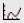
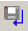

bcm2, bcm1
NAME
bcm2 - User defined baseline correction in F2 (2D)
bcm1 - User defined baseline correction in F1 (2D)
DESCRIPTION
Baseline correction commands can be started from the command line or from the baseline dialog box. The latter is opened with the command bas:
This dialog box offers several options, each of which selects a certain command for execution.
Correct baseline, using correction result from 1D row/column (F2)
This option selects the command bcm2 for execution. It performs a baseline correction in the F2 direction by subtracting a polynomial, sine or exponential function. Before you can use bcm2, you must first do the following:
- Read a row with rsr (TopSpin will switch to the 1D data window)
- Click or enter .basl to switch to baseline mode.
- Click , or to select the baseline correction function.
- Fit the baseline of the spectrum with the function you selected in step 2 (initially represented by a straight horizontal line). Click-hold button A and move the mouse to determine the zero order correction. Do the same with the buttons B, C for higher order corrections until the line matches the baseline of the spectrum.
- Click  to save the baseline correction to the 2D dataset and leave baseline mode.
- Select the 2D data window.
Then you can enter bcm2 to perform the baseline correction.
Correct baseline, using correction result from 1D row/column (F1)
This option selects the command bcm1 for execution. It works like bcm2, except that it performs a baseline correction in the F1 direction (columns). Before you can use bcm1, you must read a column with rsc and define the baseline on it (see above).
bcm* commands only works on the real data. After applying them, the imaginary data no longer match the real data and cannot be used for phase correction.
INPUT FILES
<dir>/data/<user>/nmr/<name>/<expno>/pdata/<procno>/
2rr - real processed 2D data
base_info - baseline correction coefficients
OUTPUT FILES
<dir>/data/<user>/nmr/<name>/<expno>/pdata/<procno>/
2rr - real processed 2D data
auditp.txt - processing audit trail
USAGE IN AU PROGRAMS
BCM2
BCM1
SEE ALSO
abs1, abst1, absd1, absot1, bas, abs2, abst2, absd2, absot2, bcm2, bcm1